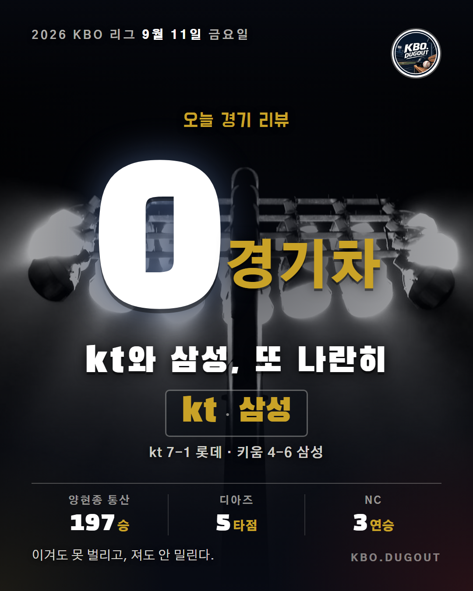
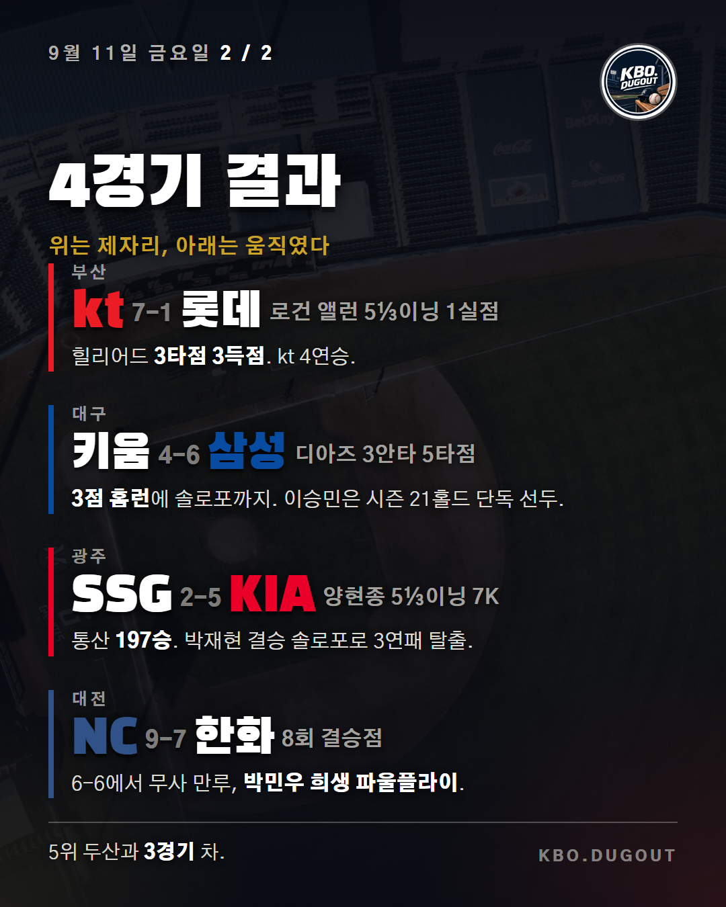

kt와 삼성이 나란히 이기면서 승차 없는 선두 다툼이 하루 더 이어졌습니다. kt는 사직 원정에서 롯데를 7-1로 눌렀습니다. 로건 앨런이 5⅓이닝을 1실점으로 막는 동안 힐리어드가 3타점 3득점을 몰아쳤습니다. 삼성은 대구 안방에서 키움을 6-4로 잡았습니다. 디아즈가 1회 3점 홈런과 6회 솔로포를 묶어 3안타 5타점을 쓸어담았고, 이승민은 7회를 삼자범퇴로 정리하며 시즌 21홀드로 단독 선두에 올랐습니다. KIA는 광주에서 SSG를 5-2로 꺾고 3연패를 끊었습니다. 양현종이 5⅓이닝 7탈삼진으로 통산 197승을 채웠고, 박재현의 5회 결승 솔로포가 승부를 갈랐습니다. NC는 대전 원정에서 홈런을 주고받은 끝에 한화를 9-7로 이겼습니다. 7회까지 6-6이던 승부는 8회 무사 만루에서 나온 박민우의 희생 파울플라이로 기울었습니다. 양현종 통산 197승 · 디아즈 3안타 5타점 · NC 3연승 #KBO #프로야구 #야구
QA 없음